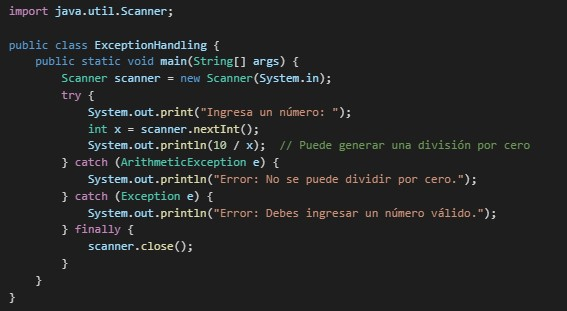

Control de flujo y excepciones
En la programación, pueden ocurrir errores inesperados, como intentar dividir entre cero o acceder a un índice inexistente en un arreglo. Para evitar que el programa se detenga abruptamente, se utilizan bloques de manejo de excepciones como try-catch en Java. Las excepciones permiten capturar y manejar errores de forma controlada, proporcionando mensajes de advertencia o ejecutando código alternativo cuando se detecta un error.
